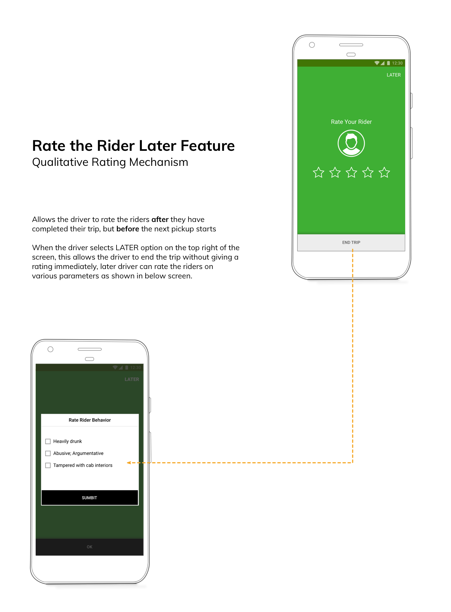
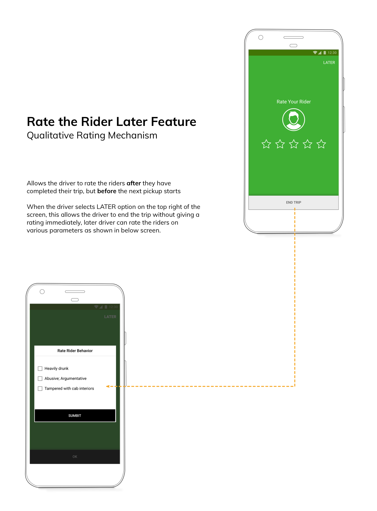

OLA / Uber - Cab drivers' experience üöò
Overview
Proposed the enhnacements to the user experience of 3rd party cab-aggregator drivers
The project is the outcome of 4th semester design project for a duration of 10 weeks during February - April 2018, at the National Institute of Design - Bengaluru, India. The objective of the design project was to understand and apply the systems/service design process and methods for conceptualization, while keeping the focus on System/ Service design paradigm.
Problem statement
The project was aimed at exploring the existing modes of transportation within the urban cities, and understand the existing problems faced by commuters
in their daily commute. Intially, it started off with the travellers as primary target audience in mind, but with time and further research it was discovered
that not only travellers have better solutions to avail transportation but also helped in identifying the friction that existed between the riders and drivers.
On further investigation, it was found that the for riders there were so many ways of making their experience more easy, however the other side of the equation
i.e. drivers were totally ignored by the transportation system.
The focus of this project was on the cab travel experience because most of the users (i.e. riders) interviewed initially, were mostly using cabs for their commuting needs.
And they complained about the driver behaviours. To understand why does that happen, drivers were interviewed and they had a completely
different story to narrate.
Therefore, resulting into the complete direction change in the research focussing on drivers as primary persona for further studies and coming up with below design brief i.e.
To make the experience more simpler, profitable and safer for aggregator cab drivers.
Proposed solution
An enhancement list of new features was proposed for the existing cab aggregator app driver's mobile application as the end solution.
üè∑Ô∏è User Interface Design

 * The content is an exclusive set of features proposed in the solution. Please get in tocuh with me to discuss the content offline.
* The content is an exclusive set of features proposed in the solution. Please get in tocuh with me to discuss the content offline.

 

Design Process

Discovery phase
For this project I intended to do something with the transportation system in
the city (like Bangalore). So, I started off by conducting a participatory brainstorming session
with a group of people who had
different experiences in travelling within a city (going to college / office / resturants / pubs etc.); and
asked them to write down with anything that comes to their mind related to transportation within a city like
Bangalore (without discussing
anything with other participants). üè∑Ô∏è Participatory brainstorming session
 After the brainstorming session, all the points that the participants had jotted down were discussed amongst
the participating group, and affinity mapping of the ideas was done to
explore the different domains
that emerged from the exercise.
As an output of the above exercise, few problem domains emerged (listed
below) which were wide enough for the participants to frame HOW MIGHT WE question on those topics.
After the brainstorming session, all the points that the participants had jotted down were discussed amongst
the participating group, and affinity mapping of the ideas was done to
explore the different domains
that emerged from the exercise.
As an output of the above exercise, few problem domains emerged (listed
below) which were wide enough for the participants to frame HOW MIGHT WE question on those topics.
- ■ Information accessibility
- ■ Language Barrier
- ■ Safety
- ■ Causes of Frustrations (Commuters / Drivers)
- ■ Infrastructure
- ■ Expensive (Travelling cost)
Later on, I invited different group of participants to rate the How Might We questions, so that the voting would remain unbaised and brings new perspective to the already identified problem areas.
üè∑Ô∏è How Might We? (Voting and Discussions with peers)

How Might We encourage the urban commuting TO enhance the experience of people with the help of technology?For this I started off my primary research by observing the interactions between transpotation service providers (drivers / conductors / air hostesses etc.) and passengers.
üè∑Ô∏è Observations made during the various inter and intra city travel

Being in constant discussions with my faculty, friends, and fellow designers; I realised there were many solution already existing for the commuters but there were hardly any solutions which took care of the drivers / conductors' experience while they perform their duty. So I decided to work on a smaller system of aggregated cab services in India, to understand how drivers are affected and how their user experience can be improved?
Defining phase
üè∑Ô∏è Primary Research - Observing OLA / UBER mobile apps being used by cab drivers.

üè∑Ô∏è Secondary Research - Policies related to cab aggregator services

üè∑Ô∏è User research summary
Key Observations- ■ Drivers are concerned about their life and car’s safety, driving late in night
- ■ Complaints made by drivers are not acted upon immediately by customer care
- ■ Most of the government and other cab policies are not cab driver friendly
- ■ Many cab drivers have been falsely alleged for harassment of female passengers
- ■ Multiple cab drivers park their cars together on the road while staying for the night, for safety reasons
All these studies pointed out that there is an opportunity area to intervene in designing better user experiences for the cab drivers.
üè∑Ô∏è System Overview: City Transportation (Cab Aggregators)
- 1. Overall Transportation System overview

- 2. Government Policies Sub-System

- 3. Cab Driver's Experience Sub-System

- 4. Rider's Experience Sub-System

Ideation phase
üè∑Ô∏è Why OLA was considered as a case study?
For this project, the drivers' experience sub-system was selected to work on further. For this cab aggregator Services like OLA and UBER were being considered, out of which OLA was selected as the case study because of the mentioned figures about OLA (being a major player in Indian market) but the same is equally applicable for Uber as well.

üè∑Ô∏è Service Blueprint

üè∑Ô∏è Perspective Framework - W.W.W.W.H

üè∑Ô∏è Design ideas


üëâUser persona

üëâCustomer Journey Map
For this journey map we will consider the persona of Rameshwara, who starts of his day as OLA driver at 6:30 am daily (except Sundays). Below is a scenario illustrating a day in life of cab drivers like Rameshwara.Design phase
üè∑Ô∏è Final Prototype
üè∑Ô∏è User testing: with actual drivers

üè∑Ô∏è Observations from the UT
- ■ Mental model of the mobile app is existing with the OLA Partners.
- ■ They easily got used to the concept of how to access the new features.
- ■ However, they were sceptical about possibility of these features because they feel they are on their own and OLA would not go through all of these pains to help them out.
üè∑Ô∏è Future scope of work
The mobile application features list for OLA is just the 1st part of the BIG solution as an outcome of this project. Apart from the mobile application enhancement, I am in the process of making a business model proposal for cab
aggregator services like OLA / Uber keeping in mind the cab driver's Experiences, which NOT ONLY provides them new avenues to generate revenues for their business model BUT ALSO allows them to retain a
loyal drivers fleet for the long run.
The development of the business model is currently a W.I.P (work in progress), please check back for the business model section (to be added soon).
Key Learnings
Realised the how important it is to bounce off your ideas to different people and get their perspective.
Made use of the methods that I learnt during the Bangalore Service JAM 2018, e.g. participatory brainstorming and HMW techniques.
Build a basic understanding of how to study a service / system, using various perspectives. Learnt how to use PESTEL and WWWWH frameworks.
Was able to conduct an actual user testing with real users (i.e. Cab Drivers) though very few in numbers; realised how easy it would be to test something which they are really used to (in this case existing OLA driver mobile app).
Key Highlight + Little Bragging üòâ
This complete project was independently conceived and presented as a Design Project outcome
of 10 Weeks duration (February - April 2018) in
M.Des Interaction Design 4th Semester at National Institute of Design, India. Some of my design research observations and insights proposed feature enhancements for Cab Aggregator services (i.e. taking OLA as a case study), for example
üëâ easy accessibility of necessary trip information (including live traffic data)
üëâ enhancing the heat map interaction
were similar to what Uber has introduced in their "The New Driver App: Building a better co-pilot" launched in April 2018 . However, the research findings had few more features which were not implemented by any of the cab aggregator app as of then.